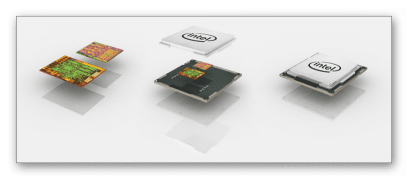
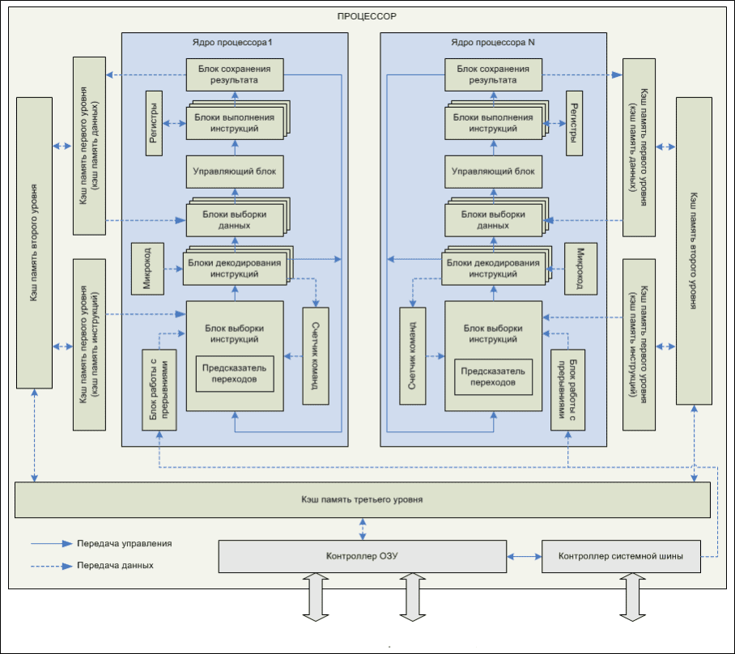
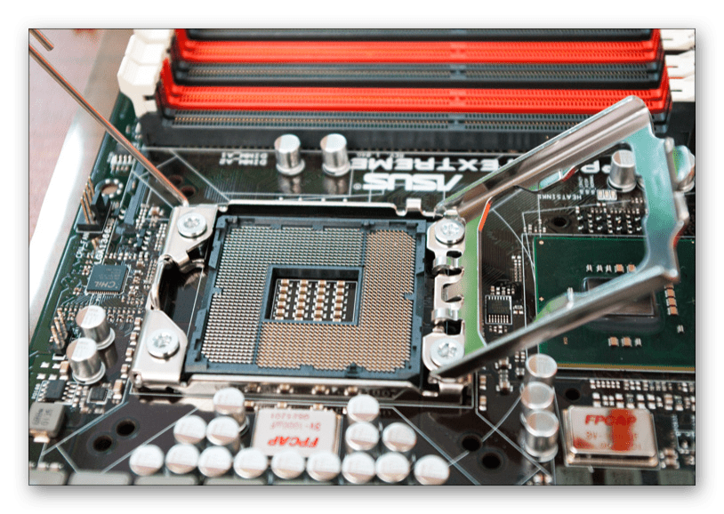

.svg)

.svg)
Общее устройство современных процессоров
Современные процессоры имеют форму небольшого прямоугольника, который представлен в виде пластины из кремния. Сама пластина защищена специальным корпусом из пластмассы или керамики. Под защитой находятся все основные схемы, благодаря им и осуществляется полноценная работа ЦП. Если с внешним видом все предельно просто, то, что касается самой схемы и того, как устроен процессор? Давайте разберем это подробнее.
Как устроен процессор компьютера
В состав ЦП входит небольшое количество различных элементов. Каждый из них выполняет свое действие, происходит передача данных и управления. Обычные пользователи привыкли отличать процессоры по их тактовой частоте, количеству кэш-памяти и ядрам. Но это далеко не все, что обеспечивает надежную и быструю работу. Стоит уделить отдельное внимание каждому компоненту.
Архитектура
Внутренняя конструкция ЦП часто отличается друг от друга, каждому семейству присущ свой набор свойств и функций – это и называется его архитектурой. Пример конструкции процессора вы можете наблюдать на изображении ниже.
Но многие под архитектурой процессора привыкли подразумевать немного другое значение. Если рассматривать ее с точки зрения программирования, то она определяется по его возможности выполнять определенный набор кодов. Если вы покупаете современный CPU, то скорее всего он относится к архитектуре x86.
Ядра
Основная часть CPU называется ядром, в нем содержатся все необходимые блоки, а также происходит выполнение логических и арифметических задач. Если вы посмотрите на рисунок ниже, то сможете разобрать как выглядит каждый функциональный блок ядра:
- Модуль выборки инструкций. Здесь осуществляется распознавание инструкций по адресу, который обозначается в счетчике команд. Число одновременного считывания команд напрямую зависит от количества установленных блоков расшифровки, что помогает нагрузить каждый такт работы наибольшим количеством инструкций.
- Предсказатель переходов отвечает за оптимальную работу блока выборки инструкций. Он определяет последовательность исполняемых команд, нагружая конвейер ядра.
- Модуль декодирования. Данная часть ядра отвечает за определения некоторых процессов для выполнения задач. Сама задача декодирования очень сложная из-за непостоянного размера инструкции. В самых новых процессорах таких блоков встречается несколько в одном ядре.
- Модули выборки данных. Они берут информацию из оперативной или кэш-памяти. Осуществляют они именно выборку данных, которая необходима на этот момент для исполнения инструкции.
- Управляющий блок. Само название говорит уже о важности данного компонента. В ядре он является главнейшим элементом, поскольку производит распределение энергии между всеми блоками, помогая выполнять каждое действие вовремя.
- Модуль сохранения результатов. Предназначен для записи после окончания обработки инструкции в RAM. Адрес сохранения указывается в исполняющейся задаче.
- Элемент работы с прерываниями. ЦП способен выполнять сразу несколько задач благодаря функции прерывания, это позволяет ему останавливать ход работы одной программы, переключаясь на другую инструкцию.
- Регистры. Здесь хранятся временные результаты инструкций, данный компонент можно назвать небольшой быстрой оперативной памятью. Часто ее объем не превышает несколько сотен байт.
- Счетчик команд. Он хранит в себе адрес команды, которая будет задействована на следующем такте процессора.
Системная шина
По системной шине CPU соединяются устройства входящие в состав ПК. К ней напрямую подключен только он, остальные элементы подсоединяются через разнообразные контроллеры. В самой шине присутствует множество сигнальных линий, через которые происходит передача информации. Каждая линия имеет свой собственный протокол, обеспечивающий связь по контроллерам с остальными подключенными компонентами компьютера. Шина имеет свою частоту, соответственно, чем она выше, тем быстрее совершается обмен информацией между связующими элементами системы.
Кэш-память
Быстродействие ЦП зависит от его возможности максимально быстро выбирать команды и данные из памяти. За счет кэш-памяти сокращается время выполнения операций благодаря тому, что она играет роль временного буфера, обеспечивающего мгновенную передачу данных CPU к ОЗУ или наоборот.
Основной характеристикой кэш-памяти является ее различие по уровням. Если он высокий, значит память более медленная и объемная. Самой скоростной и маленькой считается память первого уровня. Принцип функционирования данного элемента очень прост – CPU считывает из ОЗУ данные и заносит их в кэш любого уровня, удаляя при этом ту информацию, к которой обращались давно. Если процессору нужна будет эта информация еще раз, то он получит ее быстрее благодаря временному буферу.
Сокет (разъем)
Благодаря тому, что процессор имеет собственный разъем (гнездовой или щелевой), вы можете легко заменить его при поломке или модернизировать компьютер. Без наличия сокета ЦП просто бы впаивался в материнскую плату, усложняя последующий ремонт или замену. Стоит обратить внимание – каждый разъем предназначен исключительно для установки определенных процессоров.
Часто пользователи по невнимательности покупают несовместимые процессор и материнскую плату, из-за чего появляются дополнительные проблемы.
Видеоядро
Благодаря внедрению в процессор видеоядра он выполняет роль видеокарты. Конечно, по мощности он с ней не сравнится, но если вы покупаете CPU для несложных задач, то вполне можно обойтись и без графической карточки. Лучше всего встроенное видеоядро показывает себя в недорогих ноутбуках и дешевых настольных компьютерах.
Итог
В этой статье мы подробно разобрали из чего состоит процессор, рассказали о роли каждого элемента, его важности и зависимости от других элементов. Надеемся, что эта информация была полезна, и вы узнали новое и интересное для себя из мира CPU.